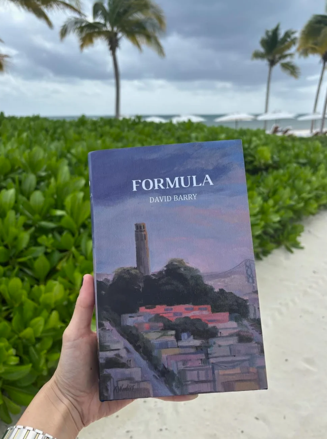

Prose
Formula

Below is an excerpt from the novel Formula by David Barry.
Timothy stopped by his bedroom, where he took his phone from the charger, and produced his inbox. Still nothing from Sieglinde. Oh, the days when she would respond! Always the sight of her name, “Sieglinde Downes,” sliding into his messages with something to say, appeared to him like some blessing he was unworthy to receive.
Outside, the bay was dappled in yachts. The fighter jets came flying in sporadic chevron bands, winding Coit Tower and Twin Peaks, before breaking rank over the water for individual showmanship.
Timothy regained the circle of furniture, tossing new ice into the bason.
“What happened with That Baby?” asked Dymtei. “Does he like your ideas?”
Timothy tried to divert the conversation, but a few moments later, Colin said:
“What ideas? the rapper?”
“I don’t like to discuss things in progress,” Timothy said. “It ruins them for me. It feels as it were to pluck a plum before it bulges with juice. I forbear to make known my intention. For now,” he turned to Werendight, “let it alone in mine own Unity of Apperception. Oh, and Alston, we will need you as propaedeutic. Colin has a new picture and I should like you to pronounce synthetic judgment—”
“None of it! I will have none of it!” Frank got up, frustrated by the frequent recurrence of such recondite talk. He raised a can to his mouth, and puncturing the metal sleeve with his canine tooth, reamed the incision with his thumbs into a conduit of greater width.
“The problem with you mounses,” he said, unsolicitedly: “is that you never do anything. All you are good for is endless chatter. I, on the other hand, have been very busy.”
Colin scoffed. “Hah! what did you do this morning, stop by Oglethorpe’s?”
“As Alston, so Tilden,” said Frank: “his best days are behind him. But the plug is perennial, and yes, I have procured an amalgam of alkaloids for the fête.”
“Let us see your picture, at least,” Werendight said, “provided one meme not overdaunt,” he turned to Francis.
“His new style departs from memes hitherto,” Timothy said. “It were almost unbelievable it be the work of the same artist.”
Colin was not fain to produce phone.
“What? Why hesitation?”
“I thought what you said was capital,” said Colin ; turning to Werendight, “I shall wait to broadcast my work until it may be seen in a more natural condition. I should like thereby to preserve liberty. So much of art is play, you understand. And in order to play, one must command his medium.”
“He turns to a tangible medium,” Timothy said. “He paints saucy girls in oil, who grudge him their numbers.”
“Good for you, Colin!” Werendight cried. “No doubt the title of painter well befits a member of Finan Party!”
“You fell in love?” said Frank. “Why? There were more girls at Exhibition Night, I daresay, than were even at the game. What with all that coinage filling Wolsey Hall, you had done better to play the pirate! You might have stowed away some booty upstairs.”
“I saw you on the staircase, descending with a female, no less than six times!”
“You are mistaken,” said Frank.
Timothy, capitalizing on the state of abstraction Colin had fallen into, seized his phone, and pried it from his grip. Meanwhile Frank came to his aid, holding Byron down. Then Colin, fiercely composing himself, re-attempted to wriggle out.
“Now when I pronounce aesthetic judgment,” Werendight said, taking up the phone, “I bring to bear upon this piece of art the whole of my unique subjectivity,—my experience, my learning, my taste. How then can I say, that simply because it strikes me a certain way, that it ought therefore to strike all people in the like fashion? I cannot say that it ought to. All I can say is that it struck me so, because of such and such concepts. The problem with art, however, is that not all of what produces delight, can be explicated in the form of a concept. There are beauties in art, in other words, that transcend the understanding. Now my authority on most things metaphysical, the Sage of Konigsberg, has this to say on these matters,—that our reason causes us to perceive finalities in nature, that is, the ultimate ends for why things exist. So in the case of a work of art, when I perceive someone depicted a certain way, I ascribe to that person a certain intention, but what is really happening, is that my faculty of reason imbues that lifeless image with soul. Hence the ambiguity of all great pictures: they invite the viewer to co-create alongside the artist. In any event, while I cannot wholly convey this supramundane fabric of the beautiful, still, I will do my best to impart, using concepts, what that is, which in this picture gives me pleasure.”
Alston studied the digital portrait. “The first thing that strikes one,” he said as he zoomed out extremely, “is the melody of color, that is to say the design, whereby you,” he looked up at Colin, “manage to associate tones of color so, that when they are seen together, they produce a whole so far greater than the sum of the parts, as a melody of Mozart’s is superior to any individual note. Now I have no conception at this distance, what this picture contains, but already I am convinced of its beauty. For regardless of detail, you have already, on a more immediate level, produced a design of color which delights the mind—in the way abstract art seeks to do at the expense of all else. But your forms are far more pleasing to me than anything abstract art could do, because they are derived from life, and from so choice a morsel thereof, as the sway of a woman’s shoulders. Now Ruskin says in that most abstract volume of his quincuncial work, that beauty is often obtained by the offsetting different uglinesses. You have not taken this idea much to heart, Colin. For the colour of your cerulean gown alone possesses such charm, that we could simply gaze thereat as though it were the welkin itself. But you have been careful not to cloy us with it. There is just enough to leave us wanting. And what is more important still, you take this refulgence, and you throw it into lugubrious relief, which brings out its splendor, and accomplishes that balance, whereto Ruskin alludes.”
“This maiden fascinates me,” said Alston, zooming in ; “you seem to have captured her just at the moment when you having given offense, she scowls with indignation that, giving way in the next place to a thirst for vengeance, displays a thorough coyness round her constricted eyes. The receipt of the slight—this transient moment of feline wrath—you have set down on eternal canvas, and I congratulate you on arresting such protean beauty.
“Let us drill down on the eyes a moment,” Alston continued as he captured a screenshot, which he proceeded to open and magnify using the zoom feature ; “her eyes immediately seize upon one, as being uneven. One seems not just to be larger than the other, but orientated towards it with oblique effect, as though they were lying on different plane surfaces, such that the second eye appears as if to look upon the first. But self-evidently you know this is not simply the effect of linear perspective. No ; the off-kilter situation of the maiden’s eyes conveys an expression of subjective emotion.
“It is important to consider the eyes as being a most useful organ to the painter in this respect,—that they may grow to exorbitant size, not only without scaring one away, but with the appearance of otherworldly intelligence. What is remarkable is that we can hardly claim as much for the ears. The mouth, the organ of mastication, is quite correctly small in this instance, which I find credible, though its dimpling convey a certain maturity. The nose which, as sensory organ, cannot but fall well beneath hearing and sight (in dignity) we find here somewhat adorable,—small, yet you see how it descends from a lofty brow.
“’Tis strange, isn’t it, the ears fail to receive from painting that spirituality, which is their due? For they are the loftiest, the noblest sensory organ if we consider the matter in this respect, namely that sound were produced and experienced only in that highest perceivable dimension, time! Ah, how soft that sweet music sounds! How directly it speaks to my emotional soul! With what yearning and romance I beat my chest to it! It strikes me straight to the quick. Still, if I were ever to commission a portrait, I should tell my painter to mind the ears!”
“I suppose it makes sense,” Alston reflected, “that the visual medium of painting would exalt that sensory organ the most, whereby it is perceived. On the other hand, if music were pictorial, we could expect it to accommodate, even to glorify, a colossal pair of ears!
“Now the close study you make of her flesh,” he continued, “may well be the most essential innovation of this genre painting, if I may place your distant depiction in so venerable a school. I remember the precise moment you saw her thus. It was only just after you first sat down in your chair. I had come over to tell you something. What was that? Something Frank had said probably. Anyways, I could see the energy. She was flitting round the hors d’oeuvres table, I remember, wasn’t she? But we all know she never ate anything in her life!—I forget myself.
“Your flesh tints are not so blushing overmuch, as Rubens. Neither is your flesh saggy and aged in his manner. Your skin here, possessing all the tautness of youth, is so transparent, those blue veins it were meant to clothe, quite apparently shew forth. You paint skin as it were a glass, my friend. I can see all the workings of her little person, the lithe little jugular muscles, the purple veins in her eyes. And she is cocking her head in a way that seems like she might be a little crazy, but oh!—It is so cute!”
“Her hands!” Alston cried, “be about as dainty, spiderlike, and vampiric, as those of a Van Dyck. And there only, Colin—in that most expressive appendage—do you so dial up the pallor, that you surpass Leonardo and his school ; though I should say you fall short still of those deadblue Madonnas by Bergognone.
“Your sfumato,” he went on, “produces immediate sensuous pleasure. When you look into the hazy expression on her face, you are compelled to obscure your own vision, as though in sympathy with the heroine. And this puts you in a trance ; you are made to feel enthralled to it, verily enslaved to its beauty, like the Blindfolding of Cupid by Titian, or like that imperial bust Dionysos Tauros…
“Now I think it wise of you, Colin,” he continued, “that in your first essay into oil color, you begin with a simple—one wants almost to call it a portrait! But she is so busily employed in the act of being angry with you, that, in all fidelity, I feel I must label it a genre painting. But then on the other hand, you depict her with such soul-life, with a glance at once so fleeting, and yet so formative to the history of your relationship, that I am obliged otherwise to call it a portrait. You have broken some rules, it appears. You have merged the style of genre painting, with that of the portrait. Your picture sits, as it were, above the jointure of these two schools.
“Your mannerist depiction of the everyday, albeit elevated, sphere, highlights the form of your technique. In that respect you are a genre painter. Yet in the mien of this saucy girl, in the detail you pay to soul-expression, you display the emotional penetration found only in the greatest portraitists of all time. This imbues even the commonplace things with an idealised quality. One feels an emotion in the picture, a beauty in the choice to lavish such attention on pleasant, if petty, surrounding circumstances, though it detract nothing from the face. You took the depiction of action to mean flashes of fiery brilliance from behind the eyes of this most adorable girl. You bring to a homely scene amidst settees in Wolsey Hall such individualities of human character, as render the work a triumph in the realist, and in the particular. Still, I don’t think portraiture could ever produce the kind of Madonna, that Raphael derived only from his dreams.”
As the point Alston was then expounding had reached an altitude somewhat abstruse, and required more effort on the part of his auditors simply to follow him, Colin took the opportunity when the others, cogitating what Alston was saying, had slackened their grips, to throw Timothy off him and take a swing at Frank, who was then obliged to release his hold. And Byron, having quit the talons of his curious friends, made a charge at Werendight, who would not surrender the device.
“Give me the phone,” Colin demanded.
“Not until I have finished with my critique,” Alston said. “You owe it to yourself, as an artist, to hear the rest of my analysis. Of course I don’t mean that. Your craft is so pure that, clearly, you never wasted a thought on pleasing anyone but you!”
“He has already analyzed the picture enough,” Timothy said as he and Frank escorted Colin several paces back. “He is already familiar with it. What is taking the phone back now gunna do? What, you vindictively want him to suffer the frustration of stifling his analysis?”
“If I might come round to the point,” Alston said, looking hard at Colin, and once more taking up the painter’s phone. “You do not merely present the lass as she appears with all the confusion and mundane detail of the experience of actually setting eyes on her for the first time in real life. You select, as the artist ought, the details which press a seal upon the memory, those particular forays into the ideal, which you project into realms of pure, and more deliciously abstract beauty.
“You capture this woman, in the mirror of your memory, with all the fair cruelty she displayed in actual fact. Although the face I see here is no mere reproduction of those airs she put on at Wolsey. No, here you encapsulate the whole of her performance, Exhibition Night, in one aureole of sauciness. She looks down on you from the superior position to which you have exalted her in your imagination. And if I may venture a guess,” he looked at him severely, “I should say that you have already fallen for this broad.”
Buy Formula by David Barry here: The Novel Formula
David Barry is an author from San Fransisco.
In this debut novel, a young man living in San Francisco works in Big Tech and launches a new business by partnering with a local musician. As Timothy Mainwaring pursues the American Dream and yearns for the best life has to offer, the worlds of sports, art, and music merge with those of tech, politics, and yacht clubs.